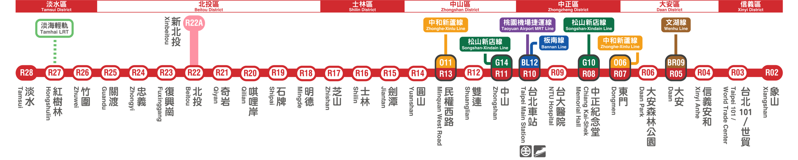

日本に留学した台湾人の台湾カフェガイド
台湾の居心地の良いカフェで一息いれて、癒して
ホーム
淡水線沿線のカフェ
「芝山」 駅（バスで20分）｜南美コーヒー(天母店)
「芝山」 駅（バスで19分）｜Humble Beginnings
「芝山」 駅（バスで18分）｜角藍色
「芝山」 駅（バスで21分）｜Pleasant Cafe
「芝山」 駅（バスで22分）｜Posse Coffee
「芝山」 駅（バスで15分）｜常在商行 Reste
「士林」 駅｜Coffee & Couple
「士林」 駅（バスで23分）｜吉佳コーヒー山上店
「台北」 駅｜二條通 緑島小夜曲
「台北」 駅｜朋丁（ポン・ディング）
「中山」 駅｜葛蕾絲珈琲館（グレイス）
「中山」 駅｜日子コーヒー本店
「東門」 駅｜Hi Nei Dou
「東門」 駅｜黒潮カフェ
「信義安和」 駅｜Cafe de Riz
「信義安和」 駅｜Jamling Cafe
English

「淡水線」は歴史の赴きが感じられる新北市淡水区から台北市の「新宿」と呼ばれる賑やかな信義区まで走る。沿線では上手い食べ物がいっぱいある「士林夜市」や「永康街」、歴史的な「中正紀念堂」、自然が恵まれている「關渡」などがあります。